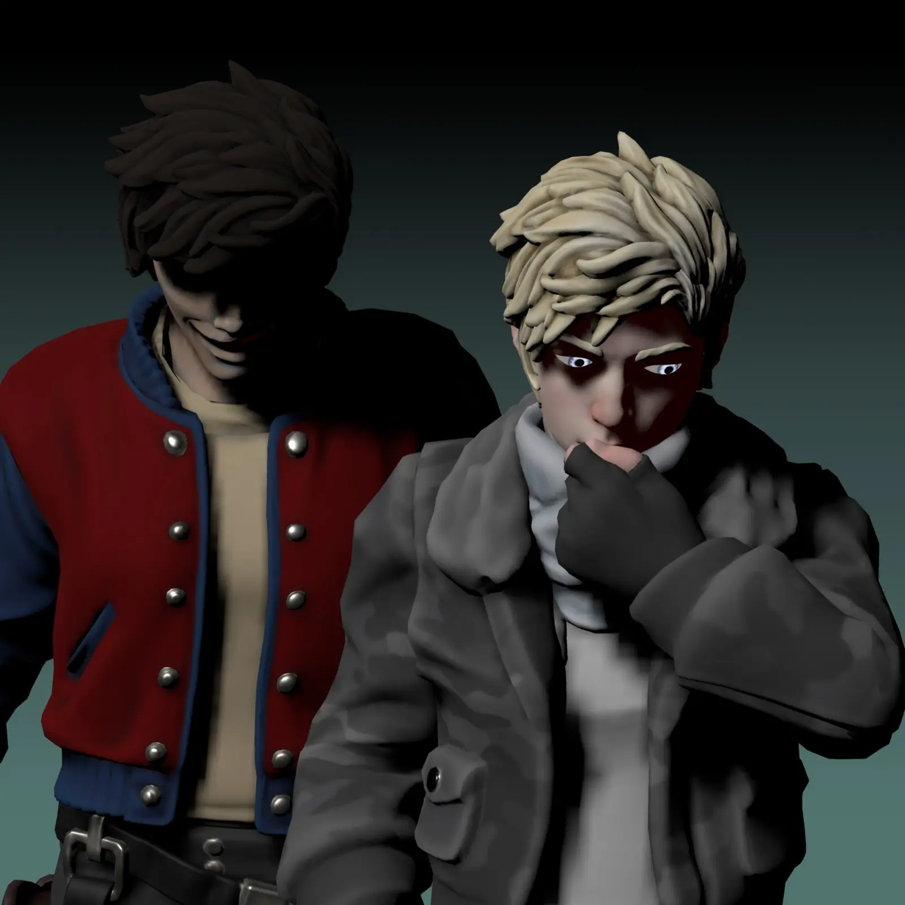
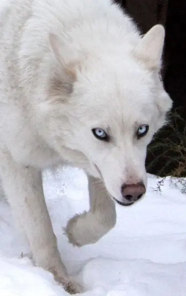
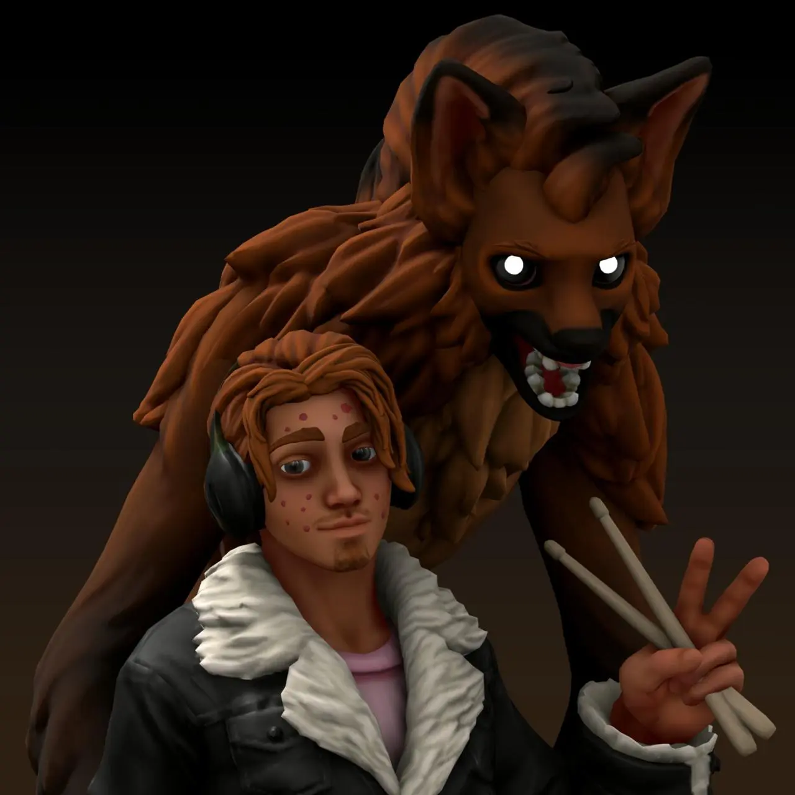
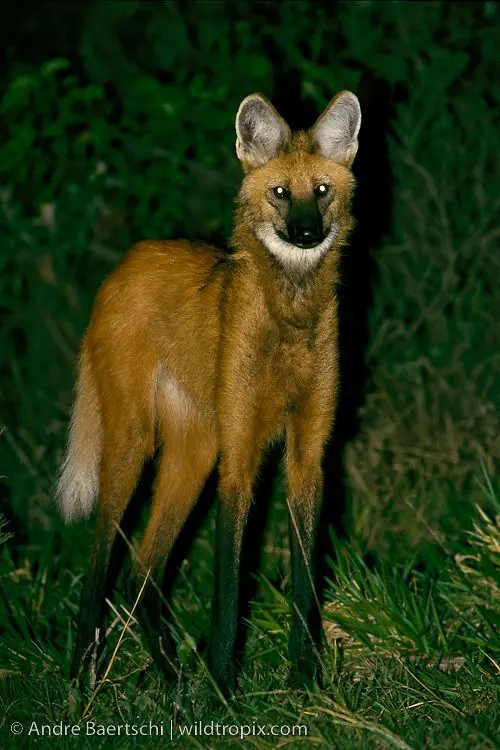
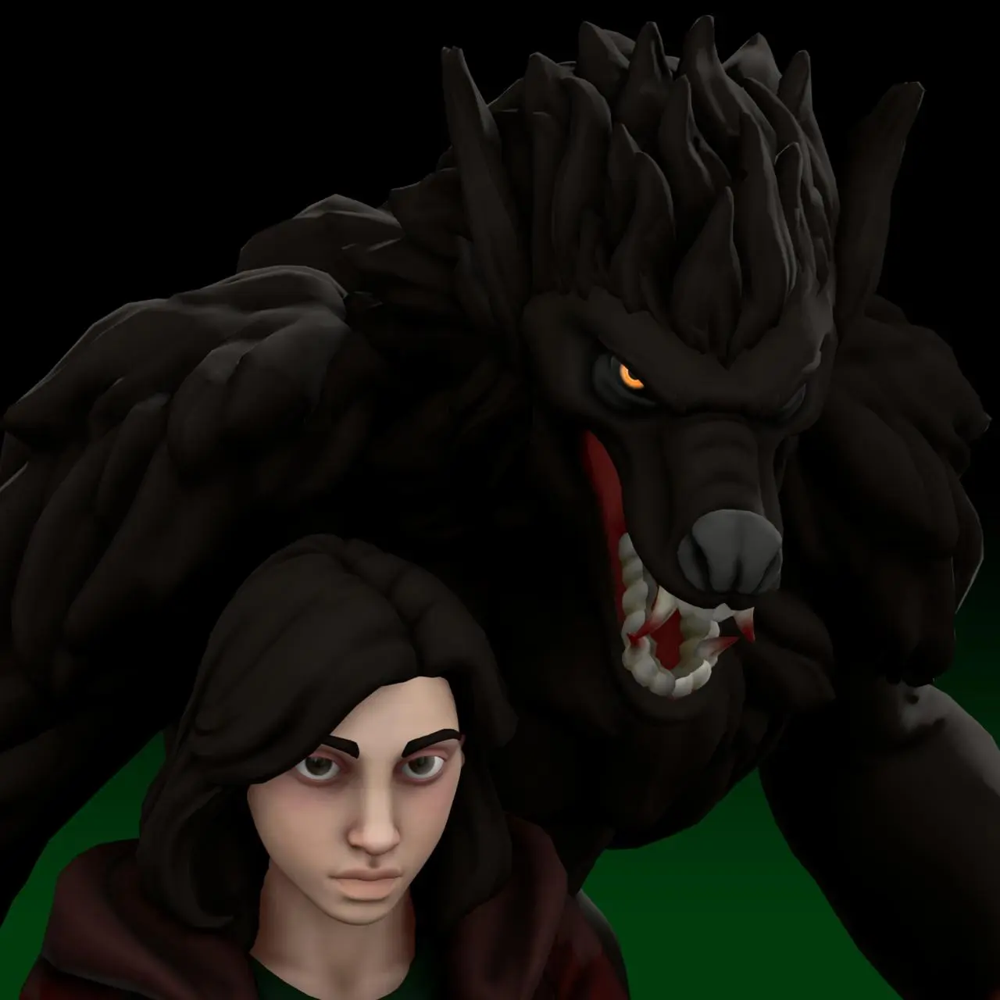
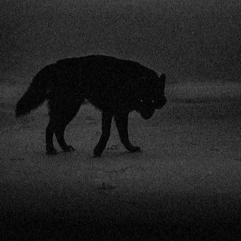
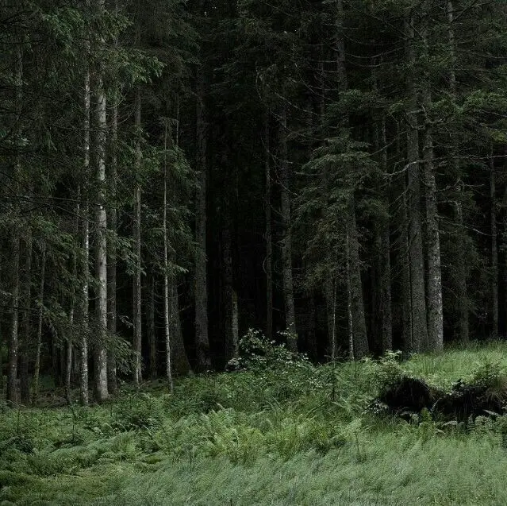
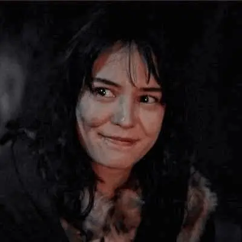
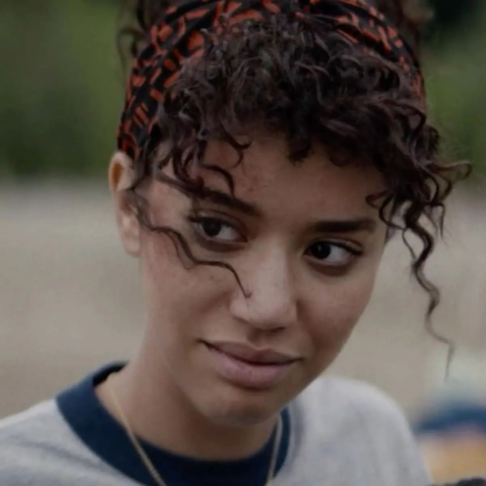
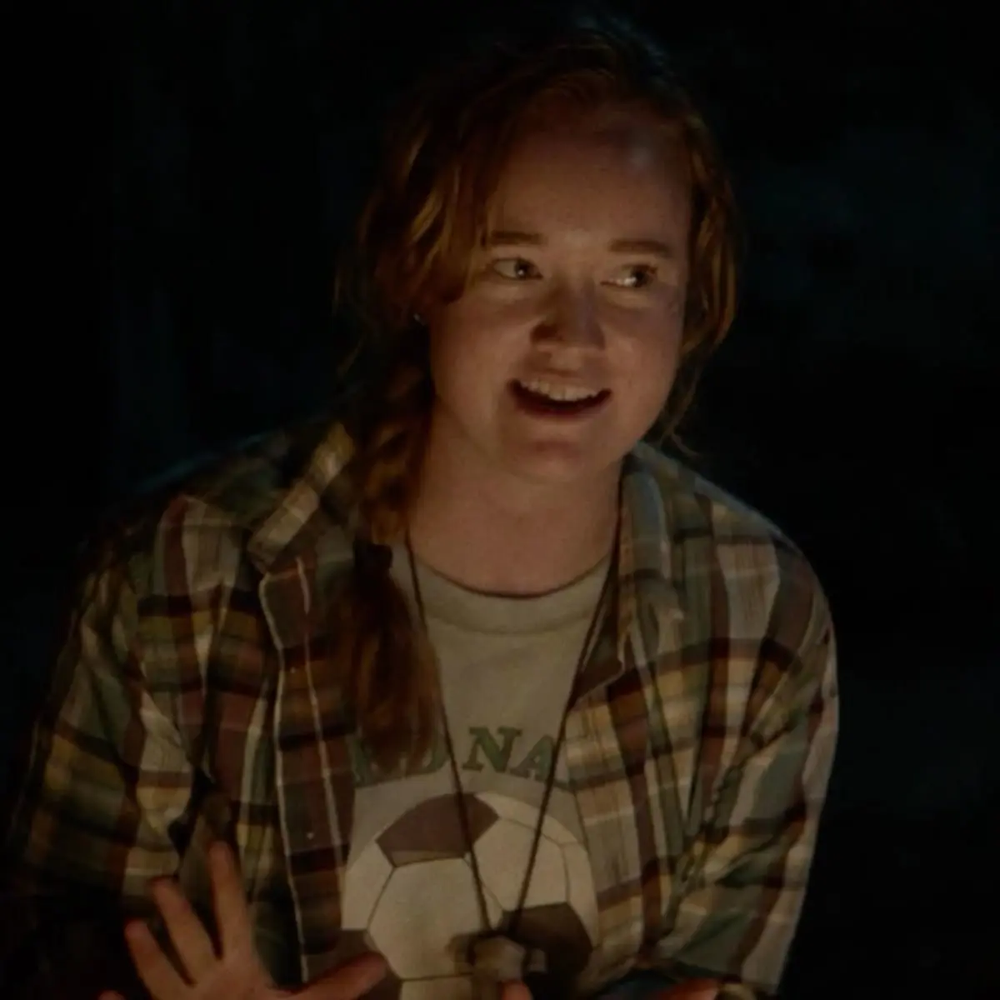

Mais Informações
Para acessar uma página contendo um tutorial de como jogar no sistema Legend in The Mist, clique aqui: Como Jogar Legend in The Mist
Para saber sobre as mecânicas específicas de lobisomens, clique aqui: Sistema de Lycantropia
A campanha se passa na cidade de Saint Gedeon, na região do Quebec. O lugar é chamado de Wiskayok pelos nativos Cree da região. O município tem em torno de 1800 habitantes em 1997, quando a campanha se passa.
Wiskayok é uma cidade verdadeiramente no meio do nada, estando à mais de 4 horas da área metropolitana mais próxima (Quebec City) e 8 horas da capital Ottawa.
Situada à margem do lago Saint Jean e enfiada no meio de florestas e fazendas, Saint Gedeon é uma exemplar do estereótipo caipira. O máximo de indústria ou comércio encontrado na região consiste de comércios familiares e venda de madeira. A cidade tem meia dúzia de ruas e uma única linha de ônibus subsidiada pelo governo provincial.
Wiskayok não possui hospitais, universidades ou qualquer tipo de infraestrutura complexa além de uma ponte e barcos que pescam no lago e navegam pelos rios até o Mar Atlântico.
A população da região fala francês e é primariamente católica. A maioria das pessoas é descendentes de colonos franceses, porém a cidade também tem uma população considerável de nativos do povo Cree (Central Montagnais).
O habitante médio de Saint Gedeon é uma pessoa que se ofende fácil e não gosta de forasteiros, especialmente falantes de inglês. As pessoas da cidade são tradicionais e fortemente conectados com o estilo de vida, dificilmente aceitando mudanças no próprio dia a dia.
Os jovens da cidade são bagunceiros, problemáticos e propensos ao crime e ao uso de drogas. A cidade é pequena demais para ter uma forte presença criminal, mas homicídios causados por desavenças são assustadoramente comuns.
Um ano antes da campanha, em 1996, o capitão do time de Hokey da única escola da região, um Cree chamado Emmanuel Stewart, foi encontrado morto em um rio próximo à casa de um amigo. Devido aos ferimentos encontrados no corpo, a polícia determinou que ele foi morto por lobos. Emmanuel era querido por todos na região, e sua morte deixou um vazio que até hoje não foi preenchido. Uma amiga de Emmanuel, Jackie Taylor, se recusa a aceitar a morte dele e passo o último ano investigando o que aconteceu, determinada à descobrir algo a mais sobre seu fim trágico.
Um ano atrás, e uma semana depois do assassinato de Emmanuel Stewart, a comunidade de Saint Gedeon sofreu um trauma chocante. Laura Lee, uma garota de 16 anos e membra devota da igreja local, foi encontrada em pedaços no pântano às margens do lago Saint Jean. Sua morte marcou a população profundamente católica, com muitos temendo a presença de um demônio na cidade. Além dos pais da menina, ninguém parece ter sofrido mais com a morte dela que sua amiga Lottie Matthews.
 
Um homem estranho chegou na cidade à algumas semanas, um albino que mal consegue se comunicar em francês, e se comunica com um sotaque americano. Ele parece estar buscando alguma coisa, e seus instintos o mostram como alguém com Sangue de Lobo, mas também mostraram outra coisa, tem algo frio nesse Kody Myers, frio e faminto como o inverno.
 
O traficante local parece ter ficado sem produto, as festas da cidade acabaram de perder a graça. Tem Sangue de Lobo nesse Vite Macunaíma, ou pelo menos sangue de alguma coisa da savana brasileira. Ele é conhecido por sua mercadoria de boa qualidade, e por sua banda de garagem, a falta de uma dessas coisas promete deixar muita gente frustrada a menos que o imigrante resolva o problema com os ingredientes.

Até quem não tem Sangue de Lobo percebe algo de animalesco em Shauna Shipman. A garota recentemente se tornou mãe, mas isso não parece ter aliviado seu comportamento antisocial. Todos da cidade a veem como uma bomba relógio prestes a explodir na cara de algum pobre coitado, se é que isso já não aconteceu...
Shauna parece estar no centro ou adjacente a vários acontecimentos estranhos na cidade, e ela sempre dá um jeito de aparecer logo antes de situações saírem do controle.

Saint Gedeon é cercada por uma vegetação densa de árvores altas e escuras. Normalmente o lugar é usado para coleta de madeira e caça ilegal, e as vezes festas insalubres da juventude local, mas recentemente a mata ao redor da cidade está se comportando de maneira estranha. Tem menos animais na floresta, e os que permanecem estão assustados. As frutas e cogumelos que antigamente podiam ser colhidos ali não aparecem mais, suas plantas não estão mais dando frutos. Algumas pessoas relataram sangue no chão e nas árvores, e sons estranhos sendo carregados pelo vento. Algo claramente não está certo na floresta ao redor de Wiskayok.

Charlotte Matthews, ou Lottie para os amigos, é uma Cree e a filha de um magnata agrícola e membra do time de futebol local. Ela compra cigarros ilegalmente com o Vite e frequentemente caminha pelas florestas ao redor da cidade, onde segundo rumores sua mãe desapareceu anos atrás. Seus instintos indicam que ela tem o Sangue de Lobo, e você já reparou que ela vem te observando à alguns dias, te encarando durante as aulas e te olhando de longe na rua. A garota não parece ter más intenções, a julgar pela expressão amigável que tem quando olhando para você, mas ela também parece estar tentando te evitar, por agora.

Taissa Turner sempre esteve ali. Ela é parte do grêmio estudantil e uma das melhores alunas da escola, mas mesmo assim tem a reputação de ser meio desligada e avoada, além de ser vista como uma estrangeira pela cor de sua pele e o leve sotaque americano que ela puxou da mãe. Taissa, ou Tai para os amigos, mora com a família Shipman, tendo sido adotada depois da morte de sua mãe. Graças à isso, ela cresceu como uma das únicas amigas de Shauna Shipman, com as duas sendo inseparáveis. Por baixo de tudo isso, no entanto, você percebe o Sangue de Lobo borbulhando nas veias da garota, instável e selvagem, a beira de escapar para a superfície.

Qualquer fã de música alternativa e filmes ruins conhece Vanessa Palmer, ou Van para os próximos. A garota trabalha na locadora local e tem a reputação de recomendar as melhores e mais desconhecidas músicas e bandas que alguém poderia querer ouvir, além de recomendar os piores filmes no catálogo para que não haja demanda que a obrigue à ir atrás quando os clientes atrasam a devolução. Vanessa também é uma grande contadora de histórias, sempre exagerando as fofocas da cidade até elas parecerem sagas medievais. Ela mora em um trailer nos arredores da cidade, mas mesmo nas poucas vezes que você a viu o Sangue de Lobo era óbvio.
The Wild Six é nome que a população deu para um grupo de garotas problemáticas, todas membras do time de futebol da cidade. Seus "membros" incluem: